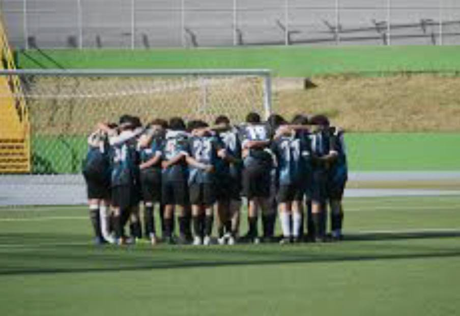

Durante la Carrera, fui un estudiante promedio: no el más brillante, pero sí el más persistente. Me uní al equipo de futbol del colegio. También partisipamos en torneos contra otros colegios y obtuvimos el 1r lugar, aunque no era el mejor, disfrutabamos del poder jugar y no estudiar JAJAJA
Al graduarme, decidí estudiar ingeniería en sistemas en la Universidad Mariano De Guatemala. Aunque al principio me costó adaptarme al ritmo universitario, poco a poco voy encontrando mi camino. siento que cada experiencia me acerca más a mi meta de convertirme en desarrollador de software.
